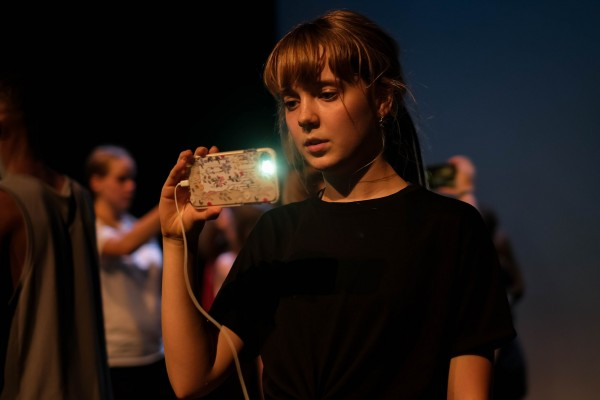
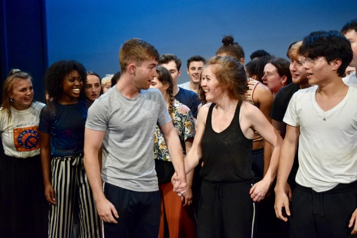
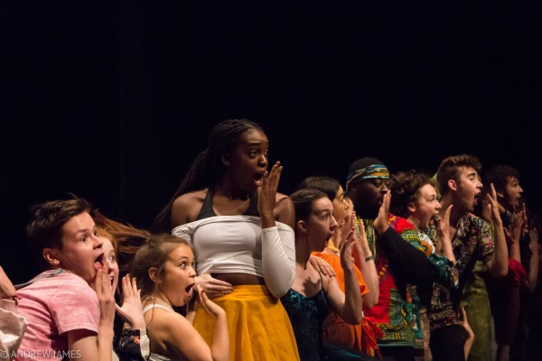

Our aims
Musical Youth Theatre Stoke is the junior branch of the Stoke & District Operatic Society. It aims to develop the singing, acting and dancing skills of young people from Stoke and surrounding areas.
Awards
In April 2019, MYTS were winners of the National Operatic and Drama Association (NODA) regional production award for Best Musical 2018 for their production of Children of Eden. MYTS also won the NODA regional production award for the Best Musical (Youth) 2017.
Current show
The current show is Les Mis School Edition: The epic tale of broken dreams, passion and redemption is set against a nation in the throes of revolution.
Previous shows
- Bugsy Malone
- West Side Story
- Footloose
- Honk
- Children of Eden
We asked our members for feedback on their favourite shows - this is how they ranked them:
- West Side Story
- Honk
- Children of Eden
- Footloose
- Bugsy Malone